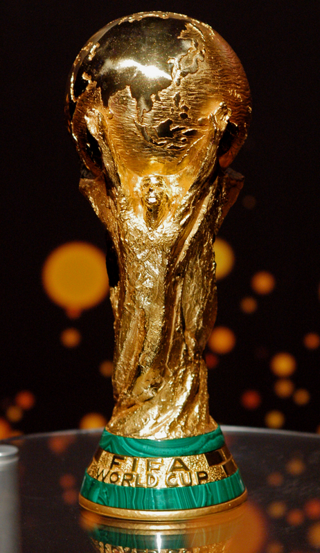

WORLD CUP
The FIFA World Cup, often simply the World Cup, is an international association football competition contested by the senior men's national teams of the members of Fédération Internationale de Football Association (FIFA), the sport's global governing body. The championship has been awarded every four years since the inaugural tournament in 1930, except in 1942 and 1946 when it was not held because of the Second World War. The current champions are Spain, who won the 2010 tournament.
The current format of the tournament involves 32 teams competing for the title at venues within the host nation(s) over a period of about a month; this phase is often called the World Cup Finals. A qualification phase, which currently takes place over the preceding three years, is used to determine which teams qualify for the tournament together with the host nation(s).
The 19 World Cup tournaments have been won by eight different national teams. Brazil have won five times, and they are the only team to have played in every tournament. The other World Cup winners are Italy, with four titles; Germany, with three titles; Argentina and inaugural winners Uruguay, with two titles each; and England, France, and Spain, with one title each.
The World Cup is the world's most widely viewed sporting event; an estimated 715.1 million people watched the final match of the 2006 FIFA World Cup held in Germany.[1]
The next three World Cups will be hosted by Brazil in 2014, Russia in 2018, and Qatar in 2022.
The world's first international football match was a challenge match played in Glasgow in 1872 between Scotland and England,[2] which ended in a 0–0 draw. The first international tournament, the inaugural edition of the British Home Championship, took place in 1884.[3] As football grew in popularity in other parts of the world at the turn of the 20th century, it was held as a demonstration sport with no medals awarded at the 1900 and 1904 Summer Olympics (however, the IOC has retroactively upgraded their status to official events), and at the 1906 Intercalated Games.[4]
After FIFA was founded in 1904, it tried to arrange an international football tournament between nations outside the Olympic framework in Switzerland in 1906. These were very early days for international football, and the official history of FIFA describes the competition as having been a failure.[5]
At the 1908 Summer Olympics in London, football became an official competition. Planned by The Football Association (FA), England's football governing body, the event was for amateur players only and was regarded suspiciously as a show rather than a competition. Great Britain (represented by the England national amateur football team) won the gold medals. They repeated the feat in 1912 in Stockholm.
With the Olympic event continuing to be contested only between amateur teams, Sir Thomas Lipton organised the Sir Thomas Lipton Trophy tournament in Turin in 1909. The Lipton tournament was a championship between individual clubs (not national teams) from different nations, each one of which represented an entire nation. The competition is sometimes described as The First World Cup,[6] and featured the most prestigious professional club sides from Italy, Germany and Switzerland, but the FA of England refused to be associated with the competition and declined the offer to send a professional team. Lipton invited West Auckland, an amateur side from County Durham, to represent England instead. West Auckland won the tournament and returned in 1911 to successfully defend their title.
In 1914, FIFA agreed to recognise the Olympic tournament as a "world football championship for amateurs", and took responsibility for managing the event.[7] This paved the way for the world's first intercontinental football competition, at the 1920 Summer Olympics, contested by Egypt and thirteen European teams, and won by Belgium.[8] Uruguay won the next two Olympic football tournaments in 1924 and 1928. Those were also the first two open world championships, as 1924 was the start of FIFA's professional era.
Estadio Centenario, the location of the first World Cup final in 1930 in Montevideo, Uruguay
Due to the success of the Olympic football tournaments, FIFA, with President Jules Rimet the driving force, again started looking at staging its own international tournament outside of the Olympics. On 28 May 1928, the FIFA Congress in Amsterdam decided to stage a world championship itself.[9] With Uruguay now two-time official football world champions and to celebrate their centenary of independence in 1930, FIFA named Uruguay as the host country of the inaugural World Cup tournament.
The national associations of selected nations were invited to send a team, but the choice of Uruguay as a venue for the competition meant a long and costly trip across the Atlantic Ocean for European sides. Indeed, no European country pledged to send a team until two months before the start of the competition. Rimet eventually persuaded teams from Belgium, France, Romania, and Yugoslavia to make the trip. In total thirteen nations took part: seven from South America, four from Europe and two from North America.
The first two World Cup matches took place simultaneously on 13 July 1930, and were won by France and USA, who defeated Mexico 4–1 and Belgium 3–0 respectively. The first goal in World Cup history was scored by Lucien Laurent of France.[10] In the final, Uruguay defeated Argentina 4–2 in front of a crowd of 93,000 people in Montevideo, and in doing so became the first nation to win the World Cup.[11]
SOURCE:
BACK